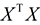
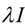
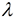
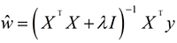
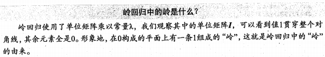
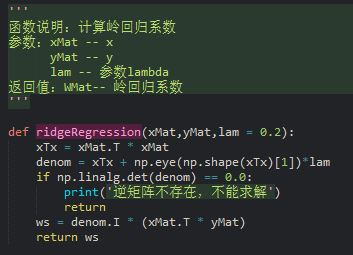
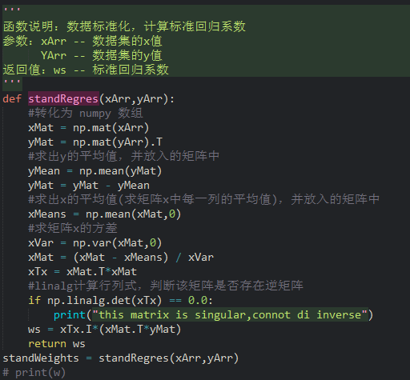
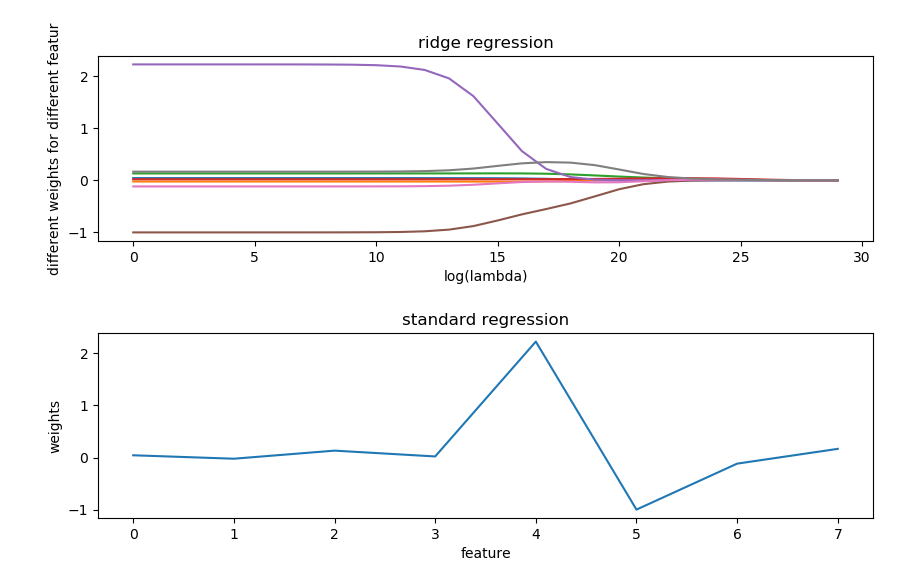

Blog
Blog
连续型数值预测之缩减系数来‘理解’数据
一、前言对于以下情况：
1. 如果数据点的特征比数据样本还多(即 n > m)应该怎么办？
2. 即使数据点的特征比数据样本少，但若数据的特征高度相关，XTX 的逆任然无法计算。
遇到上述两种情况，还能用之前的线性回归方法来处理吗？
答案是否定的，因为如果 n > m，就意味着输入矩阵 X 是非满秩矩阵，非满秩矩阵在求逆时会出现问题。
因此，统计学家引入了岭回归的概念。
二、岭回归(ridge regression)
简单来说，岭回归就是在矩阵  上加上一个  从而使得矩阵非奇异。其中矩阵 I 是一个 n x n 的单位矩阵。
即对角线元素为 1，其他元素为 0。而  是一个用户自定义的数值。
在这种情况下，回归系数的计算公式变为：

岭回归最先用于处理特征数多于样本数的情况，后来也用于在估计中加入偏差，从而得到更好的估计。
这里通过引入 来限制所有 w 的和，通过引入该惩罚项，能够缩减不重要的参数，
这个技术在统计学中也叫‘缩减’。
领回归中的岭

缩减能去掉不重要的参数，因此能更好的理解数据。此外，与简单的线性回归相比，领回归具有更好的预测效果。
三、实战代码
1. 计算岭回归系数

2. 数据标准化、计算不同 lambda 值所对应的不同岭回归系数

3. 数据标准化，计算标准回归参数

3. 对比不同 lambda 值所对应的不同岭回归系数以及标准回归系数

因为训练集中所给的矩阵含有八个特征值，因此这八条不同颜色的曲线分别代表了不同特征所占的权重。
可以看到，当 lambda 非常小时，岭回归系数与标准回归系数一样；而当 lambda非常大时，
所有回归系数缩减为 0 。因此，可以在中间某处找到使得预测结果最好的 lambda 值。
完整代码